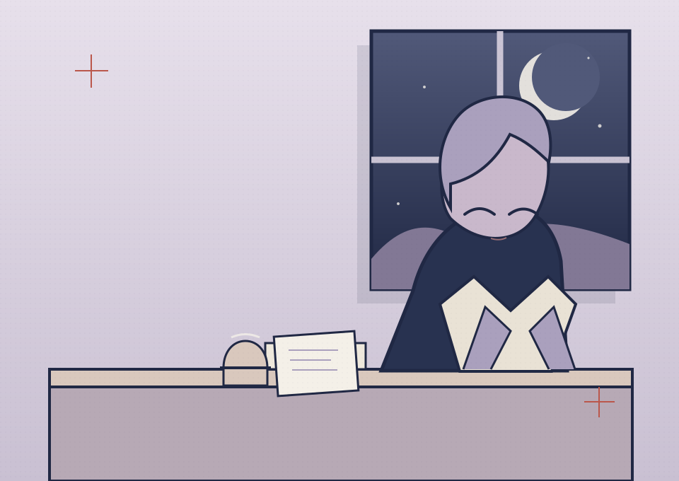
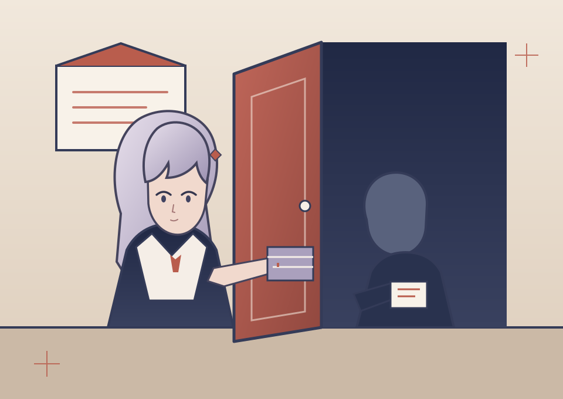
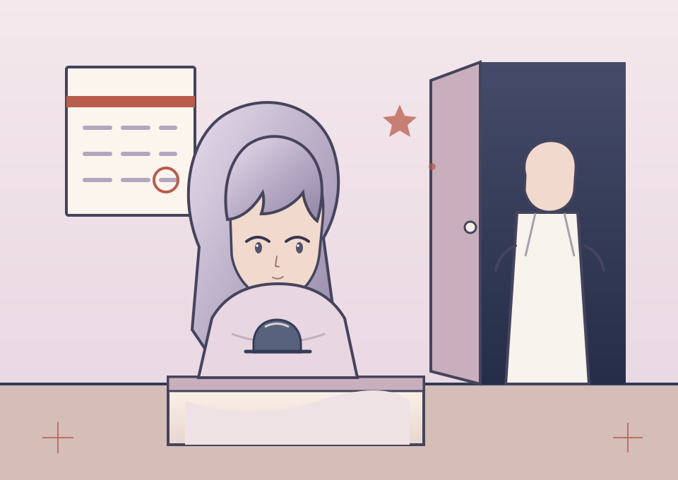

闲适 / IDLE
对他人不设防的平静，像在窗边听雨时自带一层弱光。
A STUDY OF ORDINARY MYSTERY · 2026
KANOJO KA NO YUI
被定义的少女，行走的日常系谜题。命名锚点：《租借女友》的关系契约 × 《别当欧尼酱了！》的身份解构，像一枚微小却反复发光的故障标签。

IDENTITY IS A SOFT FRACTURE
“她的名字像一把轻轻落下的门闩：有时会让人以为自己认得了她，又在下一秒发现，所有的认知都只是临时寄住的方式。”
她并不试图消除模糊，而是把模糊本身当作一种生活方式。被命名、被借用、被重新归档，都是她在日常中给出的微型演技：想被看见，又不愿完全被解释。
所谓“日常系谜题”，并非把关系割裂成零散碎片，而是把不断被重新命名的情绪，不动声色地放回生活中——像一张没写满的纸，一件总会少一颗扣子的衣衫。
A SMALL FIELD GUIDE TO HER PRESENCE
对他人不设防的平静，像在窗边听雨时自带一层弱光。
心思在真正发作前，先把它放进记录本里，安静地预备反击。
像一枚最轻的发光断裂，越是被压住，越容易在不经意间暴露出来。
她最难以解释的状态，不是美，而是突然理解了什么，又选择闭口不提。
TWO NOTES FROM AN UNFINISHED SCRIPT
“我总觉得，名字是一种借来的窗子；你看见它时，已经有人先站在里面了。”
SCENARIO 001 — THE SUBJECT / 0.5s
“你以为我在说‘我想被喜欢’，其实我只是想确认：
如果我不说，世界还会不会把我认成一个人。”SCENARIO 002 — AFTER THE MURMUR / 0.9s
RELATIONAL IDENTITY IN MODERN CONTEXT
两部作品共享同一种叙事装置：用日常生活里的契约语法，将“身份”变成可被观察、可被借用、可被重新定义的东西。她的名字是对这一切的轻柔回应，而不是单一答案。
Kanojo, Okarishimasu · 2017—
“彼女”作为关系契约，既是现实角色，也是持续被重新理解的社交脚本；对她而言，名字本身就带着暧昧的租期感。
TAKEAWAY：身份可以被临时占据，但也可能因此更清楚地显露自我边界。
Onimai: I'm Now Your Sister! · 2021—
“关系”在这里被切开、调换、重新归位，像一场微妙的角色转换：她不只被定义，还被迫反复发现自己在框架中的位置。
TAKEAWAY：被定义并不等于被消耗，解构也可以是一种温柔的维持方式。
OBSERVATION RECORD
SPECIMEN SERIES / QUIET ROOMS

不需要太多动作，夜晚的气味和纸页的摩擦就足够说明一切。她在对话前先沉默，像一枚留白被收纳在房间里。

“租借”不是缺失，是被允许以另一种方式存在。门后那一瞬的停顿，比任何明示的告白都更像真正的约定。

她虽然在变动中保持稳定，却不是永远被安置的人。她只是比其他人更早学会如何在角色之间保住一小片真实的呼吸。